지적기사 (2020-08-22 기출문제)
1과목: 지적측량
1. 지적삼각명 조정 시 국소조정이라고도 하며 수평각관측부의 출발차 또는 폐색차를 조정하는 것을 무엇이라고 하는가?
- 변규약
- 도형조건
- 삼각규약
- 측점조건
(정답률: 58%)

2. 경계의 제도 방법 기준으로 옳지 않은 것은?
- 경계는 0.1mm폭의 선으로 제도한다.
- 경계점좌표등록부 등록지역의 도면에 등록할 경계점 간 거리는 붉은색으로 제도한다.
- 경계점좌표등록부 등록지역의 도면에 등록할 경계점 간 거리는 1.0m~1.5mm크기의 아라비아숫자로 제도한다.
- 지적기준점이 매설된 토지를 분할하는 경우 그 토지가 작아서 제도하기 곤란한 때에는 그 도면의 여백에 그 축척의 10배로 확대하여 제도할 수 있다.
(정답률: 60%)
3. 잔차를 v, 관측횟수를 n이라고 할 때, 최확치의 확률오차는?
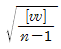
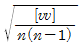
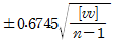
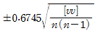
(정답률: 68%)
4. 60m의 Steel tape로 540m의 거리를 측정했다. 이 때 60m의 거리를 잴 때마다 ±5mm의 평균제곱근 오차가 있었다면 전장측정치의 평균제곱근 오차는?
- ±5mm
- ±10mm
- ±15mm
- ±20mm
(정답률: 59%)
5. 지적측량의 방법 중 세부측량의 방법으로 옳지 않은 것은?
- 평판측량방법
- 경위의측량방법
- 전파기측량방법
- 전자평판측량방법
(정답률: 60%)
6. A, B 두 점의 좌표가 아래와 같을 때 A, B사이의 거리를 구하면?
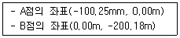
- 99.93m
- 121.33m
- 182.66m
- 223.88m
(정답률: 81%)
7. 지적측량성과와 검사 성과의 연결교차의 허용범위 기준으로 옳지 않은 것은?
- 지적삼각점: 0.20m 이내
- 지적삼각보점: 0.20m 이내
- 지적도근점(경계점좌표등록부 시행지역): 0.15m 이내
- 경계점(경계점좌표등록부 시행지역): 0.10m 이내
(정답률: 85%)
8. 다각망도선법의 망형태에 따른 최소조건식의 설명으로 옳지 않은 것은?
- Y망의 최소조건식 수는 3개이지만 조건식 수는 2개만 충족시키면 된다.
- X망의 최소조건식 수는 4개이지만 조건식 수는 3개만 충족시키면 된다.
- A망의 최소조건식 수는 5개이지만 조건식 수는 4개만 충족시키면 된다.
- 복합망은 어느 조건식을 사용하던지 최소조건식 수만 충족시키면 된다.
(정답률: 66%)
9. 지적삼각점 사이의 거리를 광파기로 5회 측정한 결과 245.45m일 때 허용교차는?
- 0.2cm
- 0.1cm
- 0.002cm
- 0.001cm
(정답률: 44%)
10. 경위의측량방법으로 세부측량을 할 때 측량준비 파일에 포함하여 작성하여야 하는 사항에 해당하지 않는 것은?
- 경계점 간 계산거리
- 인근 토지의 경계와 경계점의 좌표
- 측량대상 토지의 경계와 경계점의 좌표
- 지적기준점 및 그 번호와 지적기준점의 좌표
(정답률: 46%)
11. 그림과 같은 사각망에서
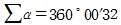
이고, ((α1+α2)-(α5+α6)=-4“일 때 α6배분할 조정량은?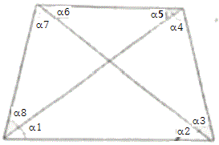
- -3”
- -5“
- +3”
- +5“
(정답률: 60%)
12. 다음 중 지적도근점측량을 반드시 시행하여야 하는 지역은?
- 토지분할지역
- 대단위 합병지역
- 축척변경시행지역
- 소규모등록전환지역
(정답률: 73%)
13. 100m+4.96mm의 정수를 표시한 권척을 사용하여 500m를 측정하였을 경우 바른 길이는?
- 500.000m
- 500.025m
- 500.043m
- 500.⑤0m
(정답률: 83%)
14. 자표면적계산법에 따른 면적측정을 하는 경우 면적을 정하는 단위 기준으로 옳은 것은?
- 10분의 1제곱미터 단위로 정한다.
- 100분의 1제곱미터 단위로 정한다.
- 1000분의 1제곱미터 단위로 정한다.
- 10000분의 1제곱미터 단위로 정한다.
(정답률: 76%)
15. 지적삼각보조검의 관측 및 계산방법으로 옳은 것은?
- 진수의 계산은 6자리 이상으로 한다.
- 1측회의 폐색공차는 ±30초 이내여야 한다.
- 삼각형 내각관측의 합과 180도와의 차는 ±40초 이내여야 한다.
- 수평각 관측의 윤곽도는 0도, 60도, 120도의 방향관측법에 의한다.
(정답률: 62%)
16. 다음 그림과 같은 정삼격형 ABC의 내접원의 반지름(r)은? (단,
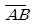
=10m)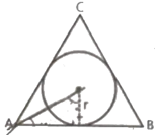
- 약 1.6m
- 약 2.9m
- 약 3.5m
- 약 4.1m
(정답률: 73%)
17. 경계점좌표등록부를 갖춰 두는 지역에 있는 각 필지의 경계점을 측정할 때 좌표를 산출하는 방법이 아닌 것은?
- 교회법
- 도선법
- 방사법
- 지거법
(정답률: 77%)
18. 세부측량을 실시한 경우 지적소관청이 지적측량성과검사 시 검사항목이 아닌 것은?
- 기지점사용의 적정여부
- 지적기준점설치망 구성의 적정여부
- 측량준비도 및 측량결과도 작성의 적정여부
- 경계점 간 계산거리(도상거리)와 적정여부
(정답률: 59%)
19. 경기도에 위치한 2등삼각점의 종선좌표(X)가 –3156.78m, 황산좌표(Y)가 +2314.65m일 때, 이를 지적측량에서 사용하고 있는 좌표로 환산한 값으로 옳은 것은?
- X=496843.22m, Y=202314.65m
- X=196843.22m, Y=502314.65m
- X=503156.78m, Y=197685.35m
- X=546843.22m, Y=197685.35m
(정답률: 70%)
20. 지적도근점측량을 배각법에 따르는 경우 연결오차의 배분 방법으로 옳은 것은?
- 각 측선의 측선장에 비례하여 배분한다.
- 각 측선의 측선장에 반비례하여 배분한다.
- 각 측선의 종·횡선차 길이에 비례하여 배분한다.
- 각 측선의 종·횡선차 길이에 반비례하여 배분한다.
(정답률: 70%)
2과목: 응용측량
21. GNSS측량에서 사이클 슬립(cycle slip)의 주된 원인은?
- 높은 위성의 고도
- 높은 신호강도
- 낮은 신호잡음
- 지형·지물에 의한 신호단절
(정답률: 79%)
22. GPS 위성의 신호에 대한 설명 중 틀린 것은?
- L1 반송파에는 C/A코드와 P코드가 포함되어 있다.
- L2 반송파에는 C/A코드만 포함되어 있다.
- L1 반송파가 L2 반송파보다 높은 주파수를 가지고 있다.
- 위성에서 송신되는 신호는 대기의 상태에 따라 전파의 속도가 달라지는 것을 보정하기 위하여 파장이 다른 2가지의 전파를 동시에 수신한다.
(정답률: 69%)
23. 터널측량시 터널입구를 결정하기 위하여 측정 A, B, C, D순으로 트래버스 측량한 결과가 아래와 같을 때, AD간의 거리는?
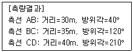
- 40.45m
- 40.54m
- 41.45m
- 41.54m
(정답률: 27%)
24. 단곡선에서 반지름 R=300m, 교각I=60°일 때, 곡선길이(C.L.)는?
- 310.10m
- 315.44m
- 314.16m
- 311.55m
(정답률: 62%)
25. GNSS측량에서 구조적 요인에 의한 오차에 해당하지 않는 것은?
- 전리층 오차
- 대류층 오차
- SA(selective availability)오차
- 위성궤도오차 및 시계오차
(정답률: 71%)
26. 축척 1:50000 지형도에서 등고선 간격을 20m로 할 때 도상에서 표시 될 수 있는 최소간격을 0.45mm로 할 경우 등고선으로 표현할 수 있는 최대 경사각은?
- 40.1°
- 41.6°
- 44.6°
- 46.1°
(정답률: 54%)
27. 수준 측량에서 전시와 후시 거리를 같게 취하는 가장 큰 이유는?
- 시준축과 기포관축이 평행이 아니므로 생기는 오차의 제거를 위해
- 표척에 있을 수 있는 눈금 오차의 제거를 위해
- 표척이 연직이 아닐 때의 오차 제거를 위해
- 관측을 편하게 하기 위해
(정답률: 60%)
28. 사진의 주점이나 표정점 등 제점의 위치를 인접한 사진에 옮기는 작업은?
- 점이사
- 표정
- 투영
- 정합
(정답률: 48%)
29. 편각법으로 원곡선을 설치할 때 기점으로부터 교점까지의 거리=123.45m, 교각(I)=40°20‘, 곡선반지름(R)=100m일 때 시단현의 길이는? (단, 중심말둑의 간격은 20m이다.)
- 4.15m
- 6.72m
- 13.28m
- 14.18m
(정답률: 51%)
30. 항공삼각측량에서 기본단위가 사진으로, 블록내의 각 사진 상의 관측된 기준점, 접합점의 사진좌표를 이용하여 최소제곱법으로 사진의 외부표정요소 및 접합점의 최확값을 결정하는 방법은?
- 다항식법
- 독립 모델법
- 광속조정법
- 그루버법
(정답률: 65%)
31. 갑, 을 2인이 두 점간의 수준측량을 하여 고저차를 구하였더니 다음과 같았다면 최확값은?
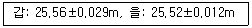
- 25.515m
- 25.526m
- 25.537m
- 25.548m
(정답률: 48%)
32. 지형의 표시방법 중에서 자연적 도법에 해당되는 것은?
- 영선법
- 점고법
- 채색법
- 등고선법
(정답률: 40%)
33. 노선측량에서 일반적으로 종단면도에 기입되는 항목이 아닌 것은?
- 관측점간 수평거리
- 절토 및 성토량
- 계획선의 경사
- 관측점의 지반고
(정답률: 57%)
34. 항공사진측량에서 동일한 지역을 사진의 크기와 촬영고도는 같게 하고, 카메라를 달리하여 촬영하였을 때, 1장의 사진에서 나타나는 초광각 카메라에 의한 촬영면적은 광각 카메라에 의한 촬영면적의 몇 배인가? (단, 초광각 카메라 초점거리=88mm, 광각카메라 초점거리=150mm)
- 약 2배
- 약 3배
- 약 4배
- 약 5배
(정답률: 40%)
35. 수준측량의 야장기입법 중에서 완전한 검산을 계산으로 할 수 있으며 높은 정도를 필요로 하는 측량에 적합하나 중간점이 많을 경우 계산이 복잡하고 시간이 많이 소요되는 단점을 갖고 있는 것은?
- 고차식
- 기고식
- 승강식
- 종단식
(정답률: 53%)
36. 완화곡선의 성질에 대한 설명으로 옳지 않은 것은?
- 곡선의 반지름은 완화곡선의 시점에서 무한대, 종점에서 원곡선의 반지름이 된다.
- 완화곡선의 접선은 시점에서 원호에, 종점에서 직선에 접한다.
- 완화곡선에 연한 곡선반지름의 감소율은 캔트의 증가율과 같다.
- 완화곡선의 종점에 있는 캔트는 원곡선의 캔트와 같다.
(정답률: 55%)
37. 터널 내 수준측량의 특징에 대한 설명으로 옳은 것은?
- 지상에서의 수준측량방법과 장비 모두 동일한다.
- 관측점의 위치는 바닥레일의 중심점을 이용한다.
- 이동식 답판을 주로 이용해야 안정성이 있다.
- 수준측량을 위한 관측점은 천정에 설치되는 경우가 많다.
(정답률: 70%)
38. 항공사진을 실체시할 때 생기는 과고감에 영향을 미치는 인자가 아닌 것은?
- 사진의 크기
- 카메라의 초점거리
- 기선고도비
- 입체시 할 경우 눈의 위치
(정답률: 47%)
39. 다음 중 지형측량의 지성선에 해당되지 않는 것은?
- 합수선
- 능선(분수선)
- 경사변환선
- 주곡선
(정답률: 62%)
40. 등고선의 성질을 설명한 것으로 틀린 것은?
- 등고선은 등경사지에서 등간격으로 나타낸다.
- 등고선은 도면 내·외에서 반드시 폐합하는 폐곡선이다.
- 등고선은 절벽이나 동굴에서는 교차할 수 있다.
- 등고선은 급경사지에서는 간격이 넓고 완경사지에서는 좁다.
(정답률: 71%)
3과목: 토지정보체계론
41. 관계형 DBMS에서 자료를 만들고 조회할 수 있는 도구로서 처음 개발된 것으로, DBMS를 제어하고 DBMS와 대화할 수 있는 관계형 데이터베이스의 표준 질의 언어는?
- SQL
- ADT
- HTML
- COBOL
(정답률: 81%)
42. 아래와 같이 주어진 수식이 의미하는 좌표변환은? (λ: 축척변환, (x0,y0): 원점의 변위량, θ: 회전변환, (x’,y’): 보정된 자표, (x,y): 보정 전 좌표)
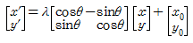
- 투영변환
- 등각사상변환
- 어파인(Affine)변환
- 의사어파인(Pseudo-Affine)변환
(정답률: 67%)
43. 지적 분야에서 토지정보시스템 구축 목적으로 옳은 것은?
- 세계좌표계로의 변환에 대비
- 지적삼각점의 관리 부실 개선
- 지적불부합에 의한 분쟁 해결
- 토지관련 정보의 효율적 이용 및 관리
(정답률: 66%)
44. 데이터 취득 시 항공사진측량에서 중복촬영 사진의 도화 유형에 속하지 않는 것은?
- 기계도화기
- 다지타이저
- 해석식도화기
- 수치사진측량시스템
(정답률: 60%)
45. 데이터베이스시스템의 구성요소에 해당하지 않는 것은?
- 사용자
- 운영체제
- 하드웨어
- 데이터베이스관리시스템
(정답률: 41%)
46. 한국토지정보시스템 구축에 따른 기대효과로 옳지 않은 것은?
- 업무 능률성 향상
- 데이터 무결성 확보
- 지적도 DB활용 확보
- 2게층으로 시스템 확장성
(정답률: 66%)
47. 지적도면을 전산화함에 있어 정비하여야 할 사항과 가장 거리가 먼 것은?
- 경계 정비
- 도곽선 정비
- 소유자 정비
- 도면번호 정비
(정답률: 80%)
48. 벡터데이터에 비하여 래스터데이터가 갖는 특징으로 옳지 않은 것은?
- 자료 구조가 단순하다.
- 위상 구조를 표현에 적합하다.
- 중첩연산을 용이하게 구현할 수 있다.
- 원격탐사자료와의 연계처리가 용이하다.
(정답률: 74%)
49. 지반 보강을 할 필요가 잇는 사질토에 위치한 대지를 검색하여 공간정보데이터 중첩분석을 통해 얻어지는 결과로 옳은 것은?
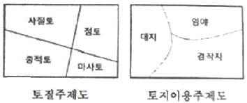
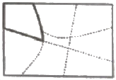
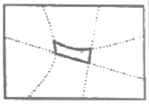
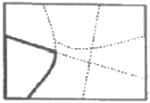
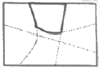
(정답률: 72%)
50. 경위의측량방법으로 세부측량을 하고자 할 때 측량준비파일의 작성에 있어 지적기준점간 거리 및 방위각의 작성 표시 색으로 옳은 것은?
- 검은색
- 노라색
- 붉은색
- 파란색
(정답률: 60%)
51. 다음의 지적도 종류 중 지형과의 부합도가 가장 높은 도면은?
- 건물지적도
- 개별지적도
- 연속지적도
- 편집지적도
(정답률: 48%)
52. GIS 구축 시 좌표계의 설정이 중요한 공간데이터에 대한 설명으로 틀린 것은?
- 수집한 데이터의 좌표계가 무엇인지 파악하여 투영정의 해야 한다.
- 투영정의 한 후에는 최종 구축할 좌표계로 투영변환 해야 한다.
- 각기 다른 좌표계로 투영변환 할 때에는 변환인자가 필요하다.
- 우리나라의 경우 X,Y좌표에 대한 가산수치는 모두 +500000m, -200000m 이므로 확인하지 않아도 된다.
(정답률: 81%)
53. 아래 내용에서 ( )안의 알맞은 것은?
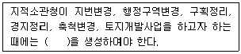
- 도곽파일
- 복제파일
- 임시파일
- 토지이동파일
(정답률: 58%)
54. 항공사진을 활용한 토지정보 수집에 대한 설명으로 옳지 않은 것은?
- 항공사진을 스캐닝하여 공간 데이터에 대한 보조적 자료로 활용한다.
- 항공사진은 세부적인 정보를 얻을 수 있는 소축적의 정보 획득에 적합하다.
- 항공사진은 사진 판독을 통하여 지질도, 토지이용도 등의 각종 주제도 제작 시 자료로 이용한다.
- 변동사항이 광역적이지 않을 경우 간단히 최근의 항공사진과 비교함으로서 공간 데이터를 최신 정보로 수정할 수 있다.
(정답률: 61%)
55. 속정정보로 보기 어려운 것은?
- 임야도의 등록사항인 경계
- 경계점좌표등록부의 등록사항인 지번
- 공유지연병부의 등록사항인 토지의 소재
- 대지권등록부의 등록사항의 대지권 비율
(정답률: 64%)
56. PBLIS 구축의 직접적인 기대효과가 아닌 것은?
- 지적정보의 효율적 관리
- 지적정보 활용의 극대화
- 지적재조사사업의 비용 절감
- 지적행정업무의 획기적인 개선
(정답률: 62%)
57. 공간정보의 형태에 대한 설명 중 틀린 것은?
- 영역은 선에 의해 폐합된 형태로서 범위를 갖는다.
- 선은 점이 연결되어 만들어지는 2차원의 공간객체이다.
- 점은 위치 좌표계의 단 하나의 쌍으로 표현되는 대상이다.
- 표면은 공간적 대상물의 범주로 간주되며 연속적인 자료의 표현이다.
(정답률: 52%)
58. 한국토지정보시스템의 개발 배경에 대한 설명으로 옳지 않은 것은?
- 필지중심토지정보시스템은 지적도를 기본도로 하였으며, 토지종합정보망은 지형도를 기본도로 하였다.
- 한국토지정보시스템은 구 행정자치부의 필지중심토지정보시스템과 구 건설교통부의 토지 종합정보망을 통합하여 개발한 시스템이다.
- 기존 전산화사업을 통해 구축된 데이터의 중복을 방지하고 데이터 간 이질감을 방지하기 위해 필지중심토지정보시스템과 토지종합정보망을 연계 통합하였다.
- 한국토지정보시스템은 구 행정자치부가 담당하는 다양한 지적관련 업무와 함께 구 건설 교통부가 담당하는 토지행정업무 지원기능 및 공간자료 관리기능을 제공한다.
(정답률: 45%)
59. 지적전산자료의 이용에 대한 심사신청을 받은 관계 중앙행정기관의 장이 심사하는 사항에 해당하지 않는 것은?
- 개인의 사생활 침해 여부
- 신청내용의 타당성, 적합성 및 공익성
- 자료의 이용에 따른 사용료 납부 방법
- 자료의 목적 외 사용 방지 및 안전관리대책
(정답률: 61%)
60. 토지정보시스템에 있어 객체(Object)와 관련이 먼 것은?
- 도로나 시설물 등도 해당된다.
- 공간정보를 근간으로 구성된다.
- 정보의 생성, 저장, 관리기능 일체를 의미한다.
- 공간상에 존재하는 일정 사물이나 특정 현상을 발생시키는 존재이다.
(정답률: 52%)
4과목: 지적학
61. 다음 중 지번의 특성에 해당하지 않는 것은?
- 연속성
- 종속성
- 특정성
- 형평성
(정답률: 67%)
62. 신라의 토지측량에 사용된 구장산술의 방전장의 내용에 속하지 않는 토지형태는?
- 양전
- 직전
- 환전
- 구고전
(정답률: 67%)
63. 지적공부에 등록하는 면적에 관한 내용으로 틀린 것은?
- 국가만이 결정한다.
- 1제곱미터 단위로만 등록한다.
- 계산은 오사오입법에 의한다.
- 지적측량에 의하여 결정한다.
(정답률: 71%)
64. 독일의 지적제도에 관한 설명으로 틀린 것은?
- 등기제도와 지적제도는 행정부에서 통합하여 운영하고 있다.
- 각 주마다 주측량사무소와 지적사무소를 설치하여 운영하고 있다.
- 연방정부는 내무부에서 측량관련 업무를 담당하고 있으나 주정부에 대한 통제가 미비한 상태로 운영되고 있다.
- 지적 관련 법령으로 민법, 지적법, 토지측량법, 지적 및 측량법, 부동산등기법등으로 각주마다 다른다.
(정답률: 47%)
65. 토지조사사업에 대한 설명으로 틀린 것은?
- 토지조사사업은 일제가 식민지정책의 일환으로 실시하였다.
- 토지조사사업의 내용은 토지소유권 조사, 토지가격조사, 지형지모조사가 있다.
- 토지조사사업은 사법적인 성격을 갖고 업무를 수행하였으며 연속성과 통일성이 있도록 하였다.
- 축척 2만5천분의 1 지형도를 작성하기 위해 축척 3천분의 1과 6천분의 1을 사용하여 세부측량을 함께 실시하였다.
(정답률: 63%)
66. 현대 지적의 기능을 일반적 기능과 실제적 기능으로 구분하였을 때, 지적의 일반적 기능이 아닌 것은?
- 법률적 기능
- 사회적 기능
- 유통적 기능
- 행정적 기능
(정답률: 79%)
67. 입안을 받지 않은 매매계약서를 무엇이라 하였는가?
- 휴도
- 결연매매
- 백문매매
- 지세명기
(정답률: 74%)
68. 조선시대의 양전법은 토지의 등급에 따라 상등전·중등전·하등전의 척도를 다르게 하는 수등이척제(水等異尺制)를 사용하였은데 이에 대한 설명으로 옳은 것은?
- 상등전은 농부수의 20지(指)
- 상등전은 농부수의 25지(指)
- 중등전은 농부수의 20지(指)
- 중등전은 농부수의 30지(指)
(정답률: 52%)
69. 적극적 등록제도와 관련된 내용으로 틀린 것은?
- 토지등록의 효력은 정부에 의해 보장된다.
- 지적공부에 등록된 토지만이 권리가 인정된다.
- 토렌스 시스템은 적극적 등록제도의 발전된 형태이다.
- 적극적 등록제도를 채택한 국가는 영국, 프랑스, 네덜란드이다.
(정답률: 71%)
70. 관계(官契)에 대한 설명으로 옳은 것은?
- 민유지만 조사하여 관계를 발급하였다.
- 외국인에게도 토지소유권을 인정하였다.
- 관계 발급의 신청은 소유자의 의무사항은 아니다.
- 발급대상은 산천, 전답, 천택(川澤), 가사(家舍)
(정답률: 48%)
71. 지적에서 지번의 부번 진행 방법 중 옳지 않은 것은?
- 고저식(高底式)
- 기우식(奇偶式)
- 사행식(蛇行式)
- 절충식(折衷式)
(정답률: 61%)
72. 필지별 지번의 부번방식이 아닌 것은?
- 기번식
- 문자식
- 분수식
- 자유식
(정답률: 66%)
73. 토지조사부(土地調査簿)에 대한 설명으로 옳은 것은?
- 결수연명부로 사용된 장부이다.
- 입안과 양안을 통합한 장부이다.
- 별책토지대장으로 사용된 장부이다.
- 토지소유권의 사정원부로 사용된 장부이다.
(정답률: 57%)
74. 토지조사사업 당시 사정에 대한 재결기관은?
- 도지사
- 임시토지조사국장
- 고등토지조사위원회
- 지방토지조사위원회
(정답률: 74%)
75. 지적법의 3대 이념으로 옳은 것은?
- 지적공부주의
- 직권등록주의
- 지적형식주의
- 실질적심사주의
(정답률: 49%)
76. 필지의 성립요건으로 볼 수 없는 것은?
- 경계의 결정
- 정확한 측량성과
- 지번 및 지목의 설정
- 지표면을 인위적으로 구획한 폐쇄된 공간
(정답률: 52%)
77. 토지조사사업 당시 혐조장의 위치를 선정할 때 고려사항이 아닌 것은?
- 조류의 속도
- 해저의 깊이
- 유수 및 풍향
- 선착장의 편리성
(정답률: 72%)
78. 토지표시사항은 지적공부에 등록하여야만 효력이 발생한다는 이념은?
- 공개주의
- 국정주의
- 직권주의
- 형식주의
(정답률: 60%)
79. 다음 중 지적형식주의와 가장 관계있는 사항은?
- 공시의 원칙
- 등록의 원칙
- 특정화의 원칙
- 인적 편성의 원칙
(정답률: 74%)
80. 현존하는 지적기록 중 가장 오래된 것은?
- 매향비
- 경국대전
- 신라장적
- 해학유서
(정답률: 76%)
5과목: 지적관계법규
81. 좌표면적계산법으로 면적측정을 하는 경우 산출면적은 얼마까지 계산하는가?
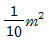
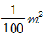
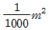
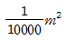
(정답률: 67%)
82. 공간정보의 구축 및 관리 등에 관한 법률에 따른 용어의 정의가 틀린 것은?
- “지번”이란 필지에 부여하여 지적공부에 등록한 번호를 말한다.
- “등록전환”이란 지적도에 등록된 경계점의 정밀도를 높이는 것을 말한다.
- “토지의 이동”이란 토지의 표시를 새로 정하거나 변경 또는 말소하는 것을 말한다.
- “지목변경”이란 지적공부에 등록된 지목을 다른 지목으로 바꾸어 등록하는 것을 말한다.
(정답률: 75%)
83. 사용자권한 등록파일에 등록하는 사용자번호 및 비밀번호에 대한 설명으로 틀린 것은?
- 사용자의 비밀번호는 6자리부터 16자리까지의 범위에서 사용자가 정하여 사용한다.
- 사용자번호는 사용자권한 등록관리청별로 일련번호로 부여하여야 하며, 수시로 사용자번호를 변경하며 관리하여야 한다.
- 사용자의 비밀번호는 다른 사람에게 누설하여서는 아니 되며, 사용자는 비밀번호가 누설되거나 누설될 우려가 있는 때에는 즉시 이를 변경하여야 한다.
- 사용자권한 등록관리청은 사용자가 다른 사용자권한 등록관리청으로 소속이 변경되거나 퇴직 등을 한 경우에는 사용자번호를 따로 관리하여 사용자의 책임을 명백히 할 수 있도록 하여야 한다.
(정답률: 64%)
84. 지목을 ‘도로’로 구분할 수 있는 토지가 아닌 것은?
- 고속도로의 휴게소 토지
- 1필지에 진입하는 통로로 이용되는 토지
- 「도로법」 등 관계 법령에 따라 도로로 개설된 토지
- 일반 공중의 교통 운수를 위해 차량운행에 필요한 설비를 갖추어 이용되는 토지
(정답률: 57%)
85. 축척변경에 따른 청산금을 산출한 결과, 증가된 면적에 대한 청산금의 합계와 감소된 면적에 대한 청산금의 합계에 차액이 생긴 경우 부족액의 부담권자는?
- 국토교통부
- 토지소유자
- 지방자치단체
- 한국국토정보공사
(정답률: 72%)
86. 이미 완료된 등기에 대해 등기 절차상에 착오 또는 유루(遺漏)가 발생하여 원시적으로 등기사항과 실체사항과의 불일치가 발생되었을 때 이를 시정하기 위해 행하여지는 등기는?
- 경정등기
- 기입등기
- 부기등기
- 회복등기
(정답률: 59%)
87. 측량기하적에 대한 설명으로 틀린 것은?
- 측정점의 방향선 길이는 측정점을 중심으로 약 2센티미터로 표시한다.
- 평판점·측정점 및 방위표정에 사용한 기지점 등에는 방향선을 긋고 실측한 거리를 기재한다.
- 평판점은 측량자의 경우 직경 1.5밀리미터 이상 3밀리미터 이하의 검은색 원으로 표시한다.
- 평판점의 결정 및 방위표정에 사용한 기지점은 측량자의 경우 직경 1밀리미터와 2밀리미터의 2중원으로 표시한다.
(정답률: 39%)
88. 지적재조사사업에 따른 경계 확정 시기로 옳지 않은 것은?
- 이의신청 기간에 이의를 신청하지 아니하였을 때
- 경계결정위원회의 의결을 거쳐 결정되었을 때
- 이의신청에 대한 결정에 대하여 30일 이내에 불복의사를 표명하지 아니하였을 때
- 이의신청에 대한 결정에 불복하여 행정소송을 제기한 경우 그 판결이 확정되었을 때
(정답률: 43%)
89. 공간정보의 구축 및 관리 등에 관한 법률에서 규정한 지적측량수행자의 성실의무 등에 관한 내용으로 옳지 않은 것은?
- 지적측량수행자는 업무상 알게 된 비밀을 누설하여서는 아니 된다.
- 지적측량수행자는 지적측량수수료 외에는 어떠한 명목으로도 그 업무와 관련된 대가를 받으면 아니 된다.
- 지적측량수행자는 본인, 배우자 또는 직계 존속·비속이 소유한 토지에 대한 지적측량을 하여서는 아니 된다.
- 지적측량수행자는 신의와 성실로써 공정하게 지적측량을 하여야 하며, 정당한 사유없이 지적측량 신청을 거부하여서는 아니 된다.
(정답률: 47%)
90. 다음 중 2년 이하의 징역 또는 2천만원 이하의 벌금에 해당하는 자는?
- 거짓으로 축척변경 신청을 한 자
- 고의로 측량성과를 사실과 다르게 한 자
- 속임수로 측량업과 관련된 입찰의 공정성을 해친 자
- 심사를 받지 아니하고 지도등을 간행하여 판매하거나 배포한 자
(정답률: 61%)
91. 국토의 계획 및 이용에 관한 법률상의 용도지역 중 행위제한 시 자연공원법, 수도법 또는 문화재보호법의 규정이 적용되는 지역은?
- 녹지지역
- 계획관리지역
- 보전관리지역
- 자연환경보전지역
(정답률: 43%)
92. 토지의 표시 변경에 관한 등기를 할 필요가 있는 경우에는 지적소관청은 지체 없이 관할등기관서에 그 등기를 촉탁하여야 하는데, 다음 중 등기촉탁이 가능하지 않은 것은?
- 등록전환
- 신규등록
- 지번변경
- 축척변경
(정답률: 70%)
93. 수수료를 현금으로만 내야 하는 사항으로 옳은 것은?
- 측량성과 사본 발급 신청 수수료
- 지적기준점성과의 열람 및 등본 수수료
- 성능검사대행자가 하는 성능검사 수수료
- 측량성과의 국외 반출 허가 신청 수수료
(정답률: 43%)
94. 공간정보의 구축 및 관리 등에 관한 법률상 지목의 명칭으로 옳은 것은?
- 소지, 염전, 도로용지, 광천지
- 사적지, 광천지, 운동자, 유원지
- 주차장용지, 잡종지, 양어장, 임야
- 공장용지, 창고용지, 목장용지, 주유소용지
(정답률: 54%)
95. 시·도별 지적삼각점의 명칭이 잘못된 것은?
- 충청북도: 충청
- 서울특별시: 서울
- 부산광역시: 부산
- 제주특별자치도: 제주
(정답률: 68%)
96. 공간정보의 구축 및 관리 등에 관한 법령상 1필지로 정할 수 있는 기준에 해당하지 않는 것은?
- 지반이 연속된 토지
- 토지의 용도가 동일
- 토지의 소유자가 동일
- 동일한 지적측량방법에 의한 토지
(정답률: 63%)
97. 거짓으로 분할 신청을 한 경우 벌칙 기준으로 옳은 것은?
- 300만원 이하의 과태료
- 1년 이하의 징역 또는 1천만원 이하의 벌금
- 2년 이하의 징역 또는 1천만원 이하의 벌금
- 3년 이하의 징역 또는 3천만원 이하의 벌금
(정답률: 48%)
98. 등기관이 토지에 관한 등기를 하였을 때 지적소관청에 지체 없이 그 사실을 알려야 하는 대상에 해당하지 않는 것은?
- 소유권의 변경 또는 경정
- 소유권의 보존 또는 이전
- 소유권의 등록 또는 등록정정
- 소유권의 말소 또는 말소회복
(정답률: 40%)
99. 국토의 계획 및 이용에 관한 법률상 공동구관리자로 옳은 것은?
- 구청장
- 특별시장
- 국토교통부장관
- 행정안전부장관
(정답률: 49%)
100. 사업시행자가 지적소관청에 토지 이동에 대한 신청을 할 수 없는 사업은?
- 도시개발사업
- 주택건설사업
- 축척변경사업
- 산업단지개발사업
(정답률: 50%)